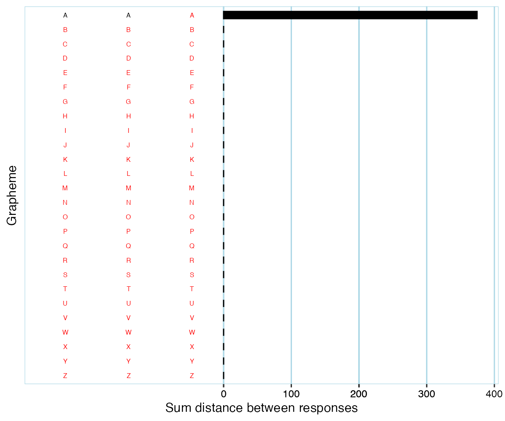
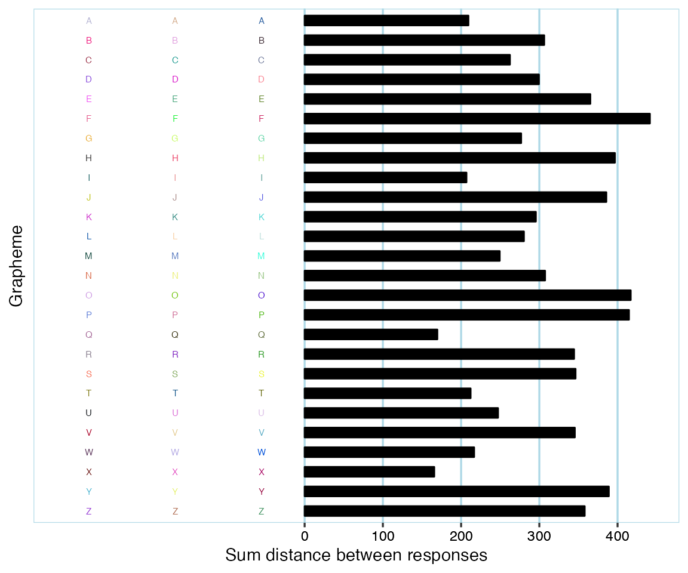
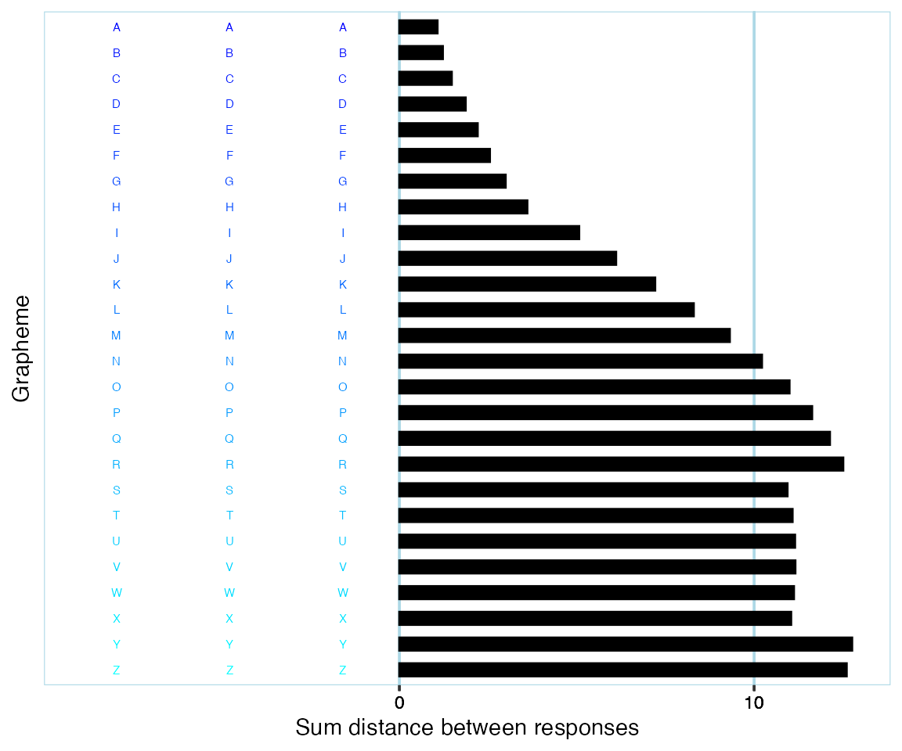
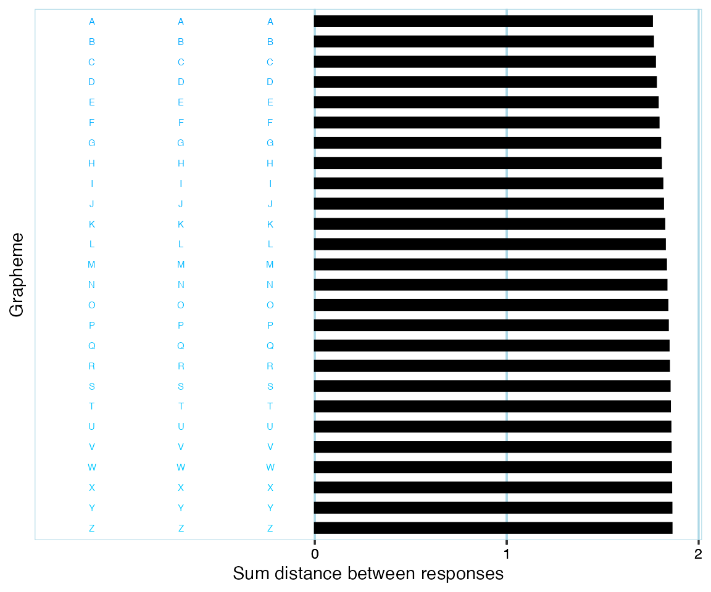

library(synr)
library(dbscan)
library(plotly)
#> Loading required package: ggplot2
#>
#> Attaching package: 'plotly'
#> The following object is masked from 'package:ggplot2':
#>
#> last_plot
#> The following object is masked from 'package:stats':
#>
#> filter
#> The following object is masked from 'package:graphics':
#>
#> layoutWhen conducting consistency tests with participants, there might be issues with their response patterns. A clear example of this is if a participant responds with a red color in all but two trials of a consistency test, like this:

This would lead to a very low (i. e. very consistent) consistency score. Should this score, and the data, be considered valid? Most synesthesia researchers would say no, and everyone would definitely say no if the participant themselves don’t report that they associate the color red with the stimuli used in the test.
Another instance of invalid data would be a participant who has provided ‘no color’ (if a ‘no color’/‘null’/‘blank’ response alternative is provided in the test) color responses for all but three graphemes. Even if the participant would have used one color for each grapheme and thus be very consistent, there’s a high risk that the participant simply memorized their previous responses throughout the test since they would have only had three graphemes to keep track of.
A clear example of valid response data is if a participant has used very different colors, like this:

Many participants have response patterns that are harder to judge as valid or invalid, such as participants who have:
Should some or all of these be considered to be examples of invalid data? Opinions are bound to differ.
The basic issue is that participants might give responses that vary too little in color for the consistency scores to mean anything. It is of course at least theoretically possible that someone would truly only have synesthetic associations with a single color. The consistency test, however, cannot determine whether this is the case, or if the participant for instance just likes the color red and keeps responding with it since that’s the color that comes to mind if they don’t have a stimulus-specific association.
Different research studies have handled possibly invalid data differently. Some (e.g. Cuskley et al., 2019) have opted for excluding participants which respond with ‘no color’ for more than a certain proportion of all trials. Others (TODO: add reference here) have opted for (also) excluding participants who respond with ‘the same color’ in too high a proportion of trials. Yet others (TODO: add reference) have excluded participants based on human judgments of whether data are invalid or not.
Excluding participants based on the proportion or number of missing and/or ‘no color’ responses is relatively straight-forward, though there is currently no widely agreed upon threshold.
Excluding participants based on responses that do have an actual color, but where there is too little ‘color variation’, raises difficult questions which are briefly discussed below.
If using a criterion of allowing say only 60% of all responses to be of the ‘same color’, how does one define boundaries of what a color is? For instance, do teal, turquoise and cyan count as different colors? In the image below, where would you say that the ‘blue’ graphemes end, and the ‘blue-green’ graphemes start?

Even if one is able to consistently define color boundaries, what if a participant happens to respond with colors that are right at the ‘border’ of two color ranges? Relating back to the previous example, if you’ve defined where ‘blue’ ends and ‘bluegreen’ starts, a participant might give responses like this:

It might be reasonable to have placed the color border between ‘blue’ and ‘blue-green’ somewhere right around the middle of the above values. If categorizing response colors based on these boundaries, then, the participant would be considered to have 50% ‘blue’, and 50% ‘blue-green’ responses. But the color differences are so small, that a human observer who doesn’t know anything about the color borders would probably say that the participant has only responded with one color.
In order to get away from the arbitrariness of pre-defined ‘color ranges’, as discussed above, one option would be to use a general measurement of ‘spread’, similar to how we generally use variance and standard deviation in statistics. One might consider response colors as points in 3D color space, with e.g. axes ‘red’, ‘blue’ and ‘green’ (if using RGB color space). An example of this can be seen in the interactive graph below. Once you think of color data in this manner, it makes sense to base measures of spread on the distances between color points. A very simple approach might be to:
This would give a measure of spread based on the ‘mean distance from center of gravity (midpoint)’. To achieve something more analogous to variance as used with one-dimensional data, one may use squared distances from the ‘middle’ in steps 2 and 3. If you’re interested in the details of these calculations, see ‘More information’ at the end of this article.
The problem with simple measures of spread is that they are very sensitive to outliers and don’t take into account that responses might be ‘grouped together’. For instance, consider a participant who has given black color responses 80% of the time, and white color responses the rest of the time. To a human observer, it would appear that the participant has used a black color far too much for the data to say anything. But simple measures of spread would indicate that the participant response colors are very varied; since black and white are extreme opposites, the ‘middle’ will end up quite far from both groups of responses, and hence the (squared) distances will be long.
One way to take into account that there might be patterns to response colors is to use so-called clustering (TODO: add reference). This is a general statistical approach for identifying groups of data that belong together and includes a number of specific methods, such as ‘k-means clustering’ and ‘Density-based spatial clustering of applications with noise’ (DBSCAN; TODO: add reference). DBSCAN is a good fit for grouping color responses since it doesn’t make any assumptions about the shape or number of clusters. See ‘More information’ at the end of this article to find out more about DBSCAN itself.
To understand what clustering and specifically DBSCAN does with color data, visualization helps. Let’s say a participant has a set of response colors as described by this interactive graph:
To a typical human observer, it looks like there are groups of black, red and white color responses, respectively. Apart from these, there are a few color responses that don’t seem to be part of a particular pattern. (the white color points are hard to make out in the graph because of the white background - it might help to touch/hover with your mouse around the ‘white corner’ to have them highlighted)
Applying DBSCAN and recoloring color points according to what cluster they belong to, the result might look something like this:
The following clusters have been identified:
You might need to go back and forth a few times between the previous two graphs for them to make sense.
We might agree with how DBSCAN clustered together ‘white’ (cluster 1) and ‘black’ (cluster 3) color points, respectively. Depending on how you perceive and define colors, you might agree or disagree with how the ‘red’ color points were grouped into two separate clusters. The point is that using DBSCAN, one can be explicit about how color points should be clustered together instead of relying on post-hoc subjective judgments or arbitrary pre-defined ‘color borders’ as discussed earlier. How this clustering happens is primarily determined by ‘epsilon’ (eps) and ‘minimum points in cluster’ (minPts) parameters - see the ‘More information’ section.
DBSCAN on its own is however not sufficient for validating color response data. The reason is that it doesn’t take into account what happens ‘within’ clusters. A participant might vary their responses so much that they all end up in the ‘noise’ cluster. Or, they might have responses similar to what’s seen below:
DBSCAN would consider all of the above points to form a single cluster, since every single point has at least one ‘neighbor’ linking it to the greater cluster. Granted, it’s unlikely that a participant will respond in this particular manner, but the same phenomenon of fairly spread out points being ‘chained together’ does happen in real data. Thus, simply counting the number of clusters isn’t enough to be able to determine the validity of color response data.
In order to take into account all relevant information, synr uses an approach for validating participant data that is based on combining DBSCAN and the ‘variance-like’ measure of spread described earlier.
As part of the validation procedure, synr calculates total within-cluster variance (TWCV). This is a modified measure of the data’s total variance that takes into account clustering of data. You can find details about this by reading the help documentation for the synr total_within_cluster_variance function.
What follows is a rough overview of an example of synr’s validation procedure being applied. It is assumed that participant data are from a consistency test where each grapheme was presented for 3 trials. Many aspects of the validation are specified by you as the user, but example values (marked in bold) are used to make the example more concrete.
TODO: add step where data from graphemes with non-complete color response data are disregarded, once this has been implemented.
Once steps 1-4 are cleared:
In other words, if the participant data had few clusters, and their TWCV score was below 250, they are classified as invalid.
TODO: add explanation that ‘noise’ cluster is only counted if it includes the minimum number of cluster points, once this has been implemented in code)
This approach enables invalidating data from participants who used one or just a few colors too much, while still validating different valid patterns of responding.
check_valid_get_twcv_scores
You first need a participantgroup (see the quickstart/main tutorial if this is new to you)
# TODO: update with long format data/function once bigger sample df has been fixed
pg <- create_participantgroup_widedata(
synr_example_full,
n_trials_per_grapheme = 3,
participant_col_name = 'participant_id',
symbol_col_regex = 'symbol',
color_col_regex = 'color',
color_space_spec = 'Luv'
)Note that the color space specification (color_space_spec) will also affect synr’s validation procedure. It is recommended that you use CIELUV (‘Luv’) or some other color space that aims to be in line with human perception. You might have noticed that RGB was used in the interactive graphs earlier as it’s fairly intuitive, but it is not suitable for validation procedures.
3-minute YouTube video giving a brief introduction to DBSCAN: https://www.youtube.com/watch?v=_A9Tq6mGtLI.
Official documentation for the dbscan package: https://www.rdocumentation.org/packages/dbscan/versions/1.1-8
More details about data validation-related procedures can be found in synr’s documentation for the following functions (access the documentation by running e.g. ?synr::centroid_3d_sq_dist):
centroid_3d_sq_disttotal_within_cluster_variancevalidate_get_twcvYou can also find higher-level information in the documentation for the check_valid_get_twcv_scores method by running ?synr::ParticipantGroup.